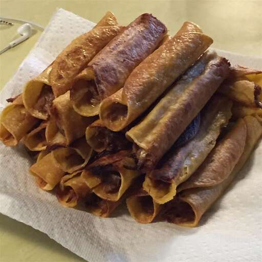

Beef taquitos

Description
Ingredients
- oil for frying
- 2 (12 ounce) cans roast beef with gravy
- 1 cup shredded pepper Jack cheese
- 1 (7 ounce) can diced green chiles
- 18 corn tortillas
Steps
- Heat oil in a skillet over medium-high heat.
- Combine roast beef, pepper jack cheese, and green chilies in a bowl. Use a fork to break up the beef and mix ingredients.
- Fry tortillas in hot oil just long enough to soften, just a few seconds; drain on a plate lined with paper towels.
- Begin spooning beef mixture into tortillas making a line down the middle of the tortilla. Roll tortilla around the filling and place in frying pan with the edge of the rolled tortilla facing the bottom of the pan. Cook until the tortillas are completely browned, 5 to 8 minutes per side. Drain again on paper towels before serving.
Home